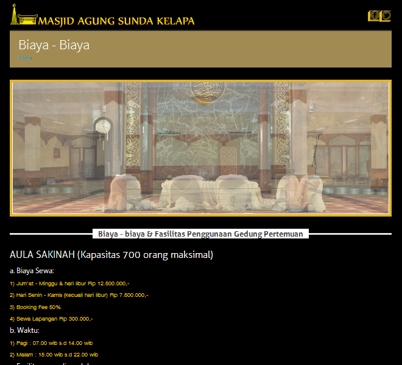

MASK
Launching
Masjid Agung Sunda Kelapa
Website
Created by Rizqi
About Developer
RIZQI
www.atdiv.com
EMAIL : AKHBARR@GMAIL.COM
NO TELP : 081514582667
URL Domain
www.masjidagungsundakelapa.com
Atau
www.mesjidagungsundakelapa.com
Adalah Domain Yang Sama
Redirect Get Header
Main Content
List Of Menu
Halaman Utama
- Halaman Rekanan
- Halaman Kontak
- Halaman Lokasi
- Halaman Biaya biaya
- Halaman Ketentuan Umum
- Halaman Jadwal Event
- Halaman Calender Event
Tampilan Index

Tampilan Halaman Rekanan
Halaman Dekorasi
Halaman Lokasi MASK
Biaya-Biaya
Halaman Ketentuan Umum
Halaman Kontak
Halaman Rekanan
Halaman Rekanan 2
Halaman protected
Open Page

Calender Event
Undone Page
Feature
The Benefit
- Tampil di Halaman Depan
Logo Perusahaan
Halaman Khusus
layout : Slide Show
Koleksi Photo
keuntungannya
1. Bisa diakses dimana saja,otomatis lebih cepat dikenal orang.
2. Bisa tampilkan foto produk ( unlimited )
3. Ada tampilan logo dan nama perusahaan,profile,website,.email (kecuali
paket starter)
4. semakin tinggi paket yang diambil semakin tinggi pula Exposure yang didapat
Pertanyaan?
pengelola.mask@gmail.com
021 31934261
Atau Hubungi
Taufan Suherman : 0813 85666 859
H. Muhammad HS : 0815 9521 962
Rudin : 0815 1045 1378